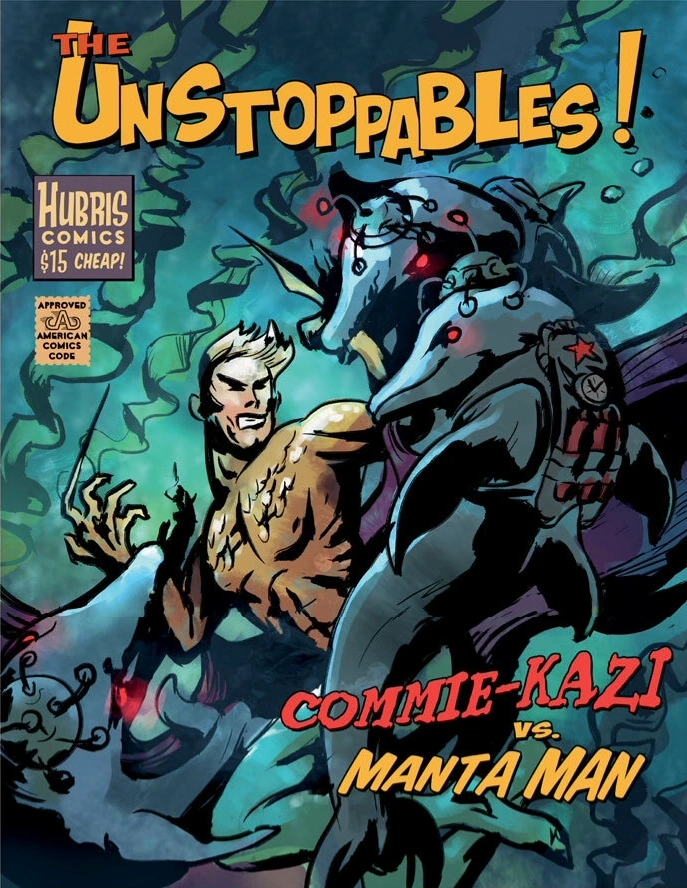

コミーカミカゼは、ハブリス・コミックのシリーズ『アンストッパブルズ』に登場する敵キャラクターである。彼らは、外科的に改造されたイルカで、精神制御装置と高性能爆薬を装着しており、アメリカ最高のヒーローたちと戦うために共産主義者によって送り込まれたようだ。
登場作品
コミーカミカゼは、『Fallout』ユニバースにおいて、『アンストッパブルズ』の一編「コミーカミカゼ vs マンタ・マン」として、『Fallout 4』および『Fallout 76』に登場する。
舞台裏
この名前は、共産主義（Communism）と神風（Kamikaze）に由来している。
感想
アパラチアの荒野で、この『アンストッパブルズ』のコミックを見つけた時、戦前の人々の想像力と、共産主義への恐怖がいかに奇妙な形で結びついていたかを改めて思い知らされた。イルカを改造して爆弾を括り付け、精神制御で操る…なんて発想は、まさに狂気じみている。だが、この世界が崩壊する直前まで、人々はこんな荒唐無稽な敵と戦うヒーローに熱狂していたのだ。マンタ・マンがコミーカミカゼと戦う姿は、単なる娯楽ではなく、当時の社会が抱えていた不安の象徴だったのかもしれない。今となっては、ただの紙切れだが、このコミックは戦前の文化と、それが生み出した奇妙な恐怖を伝える貴重な遺産だ。もし、本当にこんな兵器が開発されていたとしたら…考えるだけでもゾッとする。
アパラチアの荒野で、この『アンストッパブルズ』のコミックを見つけた時、戦前の人々の想像力と、共産主義への恐怖がいかに奇妙な形で結びついていたかを改めて思い知らされた。イルカを改造して爆弾を括り付け、精神制御で操る…なんて発想は、まさに狂気じみている。だが、この世界が崩壊する直前まで、人々はこんな荒唐無稽な敵と戦うヒーローに熱狂していたのだ。マンタ・マンがコミーカミカゼと戦う姿は、単なる娯楽ではなく、当時の社会が抱えていた不安の象徴だったのかもしれない。今となっては、ただの紙切れだが、このコミックは戦前の文化と、それが生み出した奇妙な恐怖を伝える貴重な遺産だ。もし、本当にこんな兵器が開発されていたとしたら…考えるだけでもゾッとする。
まだコメントはありません。